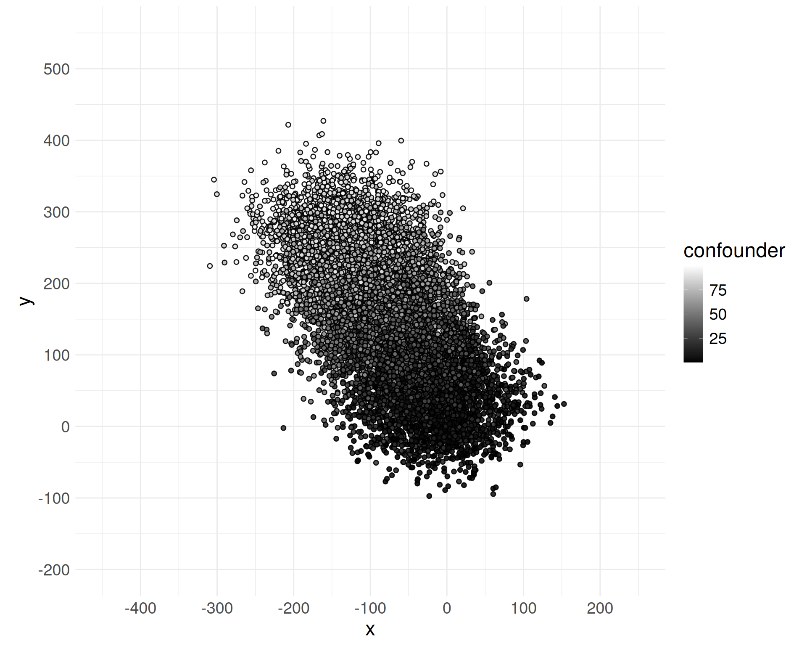
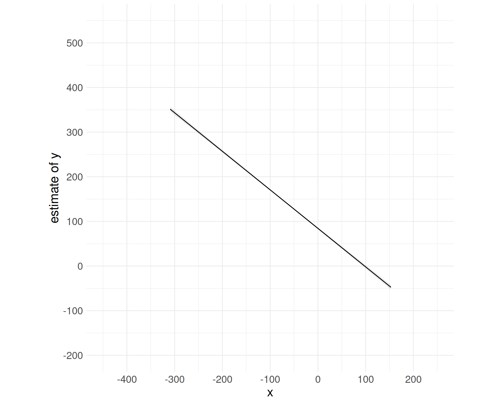
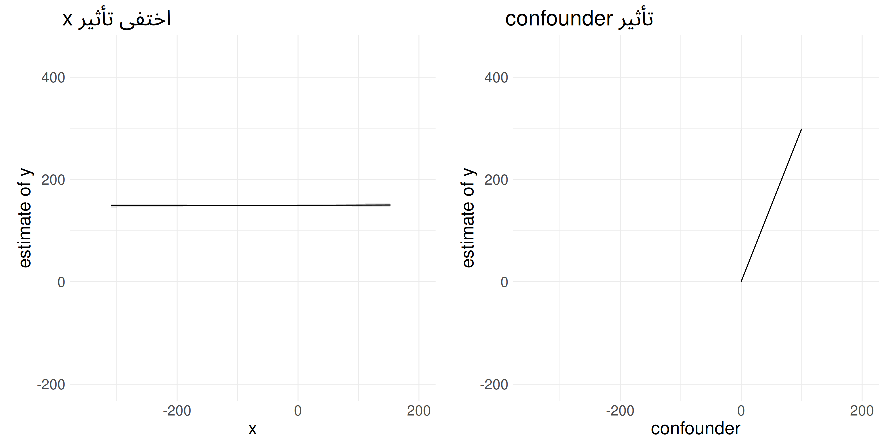

![]()
n = 10000
c2x = -1.5
c2y = 3مثال على الالتباس confounding
تأثير غير موجود - نموذج خطي
1 توليد البيانات: نحن نصنع الواقع!
في هذا المثال:
سنقوم بتوليد جمهرة (n = 10000)
سنحدد العلاقات بين المتغيرات بأنفسنا كمل يلي:
xوyهما متغيرين مستمرين مستقلين عشوائياً- لا توجد علاقة سببية بين
xوy confounderهو كونفاوندر (متغير مربك) - سنرى دوره المربك بعد قليلconfounderيؤثر علىxconfounderيؤثر علىy
نلاحظ: لا توجد أية علاقة مباشرة بين x و y. وبناء عليه قد يظن أحدنا أنه إذا شاهدنا تغيراً في أحدهما فلن يسبب ذلك تغيراً في الآخر. ولكن هذا غير صحيح. والسبب؟
السبب هو وجود المتغير المربك confounder الذي يؤثر في كل من x و y.
n = 10000
# no causal effect between x and y
tb = tibble(
confounder = runif(n, 0, 100),
x = c2x * confounder + rnorm(n, 0, 50),
y = c2y * confounder + rnorm(n, 0, 40)
)
# notes:
# large error in the exposure x --> attenuation bias
# large error in the outcome y --> large stderrسنرسم مخطط DAG للعلاقات السببية التي حددناها بأنفسنا:
هكذا تبدو الجمهرة.. إذا نظرنا إلها كجدول بيانات (أول 5 صفوف):
| confounder | x | y |
|---|---|---|
| 53.38 | −70.54 | 177.49 |
| 49.65 | −21.69 | 153.66 |
| 74.43 | −85.65 | 196.99 |
| 19.34 | 28.66 | 102.30 |
| 83.03 | −167.44 | 280.13 |
المخطط البياني التالي يظهر كل شخص كنقطة لها الخصائص البيانية التالية:
- كل نقطة لها
x - كل نقطة لها
y - كل نقطة لها لون داخلي (من الأسود إلى الأبيض) - حسب قيمة
confounder
نلاحظ وجود ارتباط (ظاهري) واضح بين x و y حيث يبدو ميل الارتباط الخطي -2.

2 الالتباس confounding
2.1 تحليل العلاقة بين x و y بدون أخذ confounder بعين الاعتبار!
سنحلل الترابط بين x و y متجاهلين أن confounder هو متغير مربك يؤثر على كل منهما.
# y = b0 + b1 * x + e
lm0 = lm(y ~ x, data = tb)
lm0 |> summary()
Call:
lm(formula = y ~ x, data = tb)
Residuals:
Min 1Q Median 3Q Max
-270.79 -52.27 0.73 52.33 264.97
Coefficients:
Estimate Std. Error t value Pr(>|t|)
(Intercept) 84.3962 1.1387 74.1 <0.0000000000000002 ***
x -0.8631 0.0113 -76.4 <0.0000000000000002 ***
---
Signif. codes: 0 '***' 0.001 '**' 0.01 '*' 0.05 '.' 0.1 ' ' 1
Residual standard error: 75.5 on 9998 degrees of freedom
Multiple R-squared: 0.368, Adjusted R-squared: 0.368
F-statistic: 5.83e+03 on 1 and 9998 DF, p-value: <0.0000000000000002
!!!
النموذج الخطي يقول بأن x له ترابط مهم إحصائياً مع y! السبب هو أننا لم نضبط النموذج الخطي حسب confounder.
Estimate Std. Error t value Pr(>|t|)
x -0.8631 0.0113 -76.4 <0.0000000000000002ملاحظة جانبية: حجم الارتباط (الزائف بالمناسبة) -0.863 أصغر مما نتوقعه من العلاقات التي وضعناها في الجمهرة -2 وذلك بسبب الخطأ العشوائي rnorm(n, 0, 50) في المتغير المستقل x. هذا يسمى انحياز التخامد attenuation bias في النموذج الخطي، أي اقتراب حجم الترابط إلى قيمة العدم (هنا 0).
نقول أن المتغير المربك confounder يفتح مساراً خلفياً (backdoor) بين x و y. هنا نرى المسار الخلفي باللون الأحمر، ويؤدي عملياً إلى ترابط غير حقيقي بين المتغيرين المستقلين سببياً:
2.2 تحليل العلاقة بين x و y مع ضبط حسب confounder
سنعيد نمذجة الترابط بين x و y ولكن بعد الاعتراف بـ confounder كمتغير مربك يؤثر على كل منهما. أي، سنضيفه كمتغير مستقل في النموذج.
Call:
lm(formula = y ~ x + confounder, data = tb)
Residuals:
Min 1Q Median 3Q Max
-173.8 -27.7 -0.2 26.8 145.1
Coefficients:
Estimate Std. Error t value Pr(>|t|)
(Intercept) 0.73197 0.80498 0.91 0.36
x 0.00267 0.00814 0.33 0.74
confounder 2.98420 0.01883 158.47 <0.0000000000000002 ***
---
Signif. codes: 0 '***' 0.001 '**' 0.01 '*' 0.05 '.' 0.1 ' ' 1
Residual standard error: 40.3 on 9997 degrees of freedom
Multiple R-squared: 0.82, Adjusted R-squared: 0.82
F-statistic: 2.28e+04 on 2 and 9997 DF, p-value: <0.0000000000000002
نلاحظ أن النموذج الخطي الجديد يظهر أن x لم يعد له ترابط مهم إحصائياً مع y! (p-value عالية)
Estimate Std. Error t value Pr(>|t|)
x 0.00267 0.00814 0.33 0.74النموذج يظهر أيضاً أن confounder هو الذي لديه ارتباط قوي جداً مع y (p-value صغيرة جداً) وبالتالي، هو الذي يفسر الترابط الظاهري الزائف بين x و y.
Estimate Std. Error t value Pr(>|t|)
confounder 2.9842 0.0188 158 <0.0000000000000002 ***